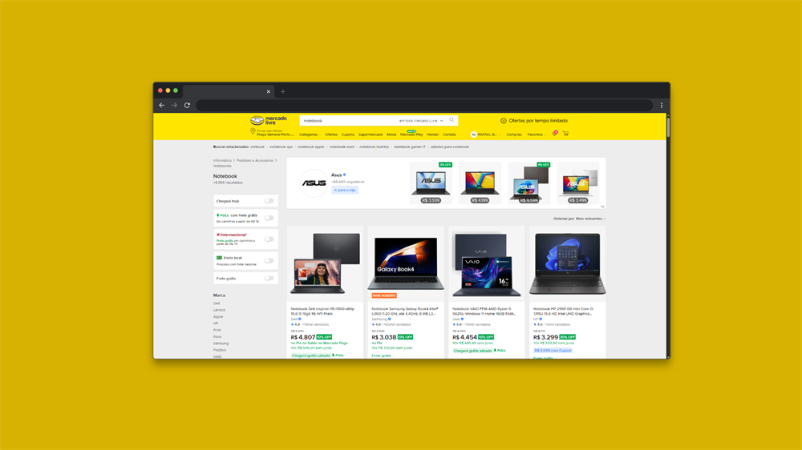
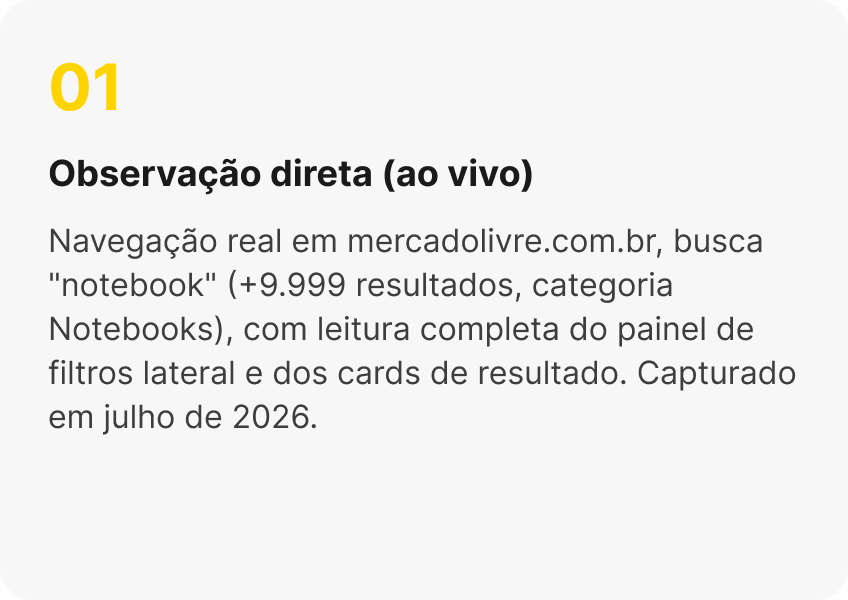
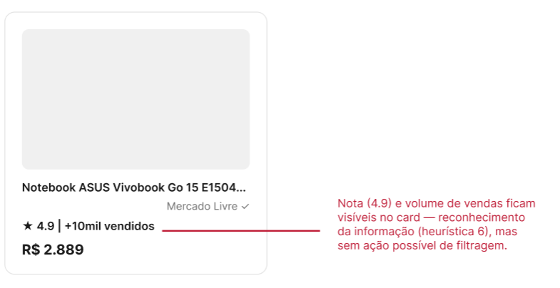
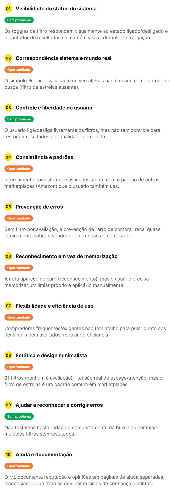
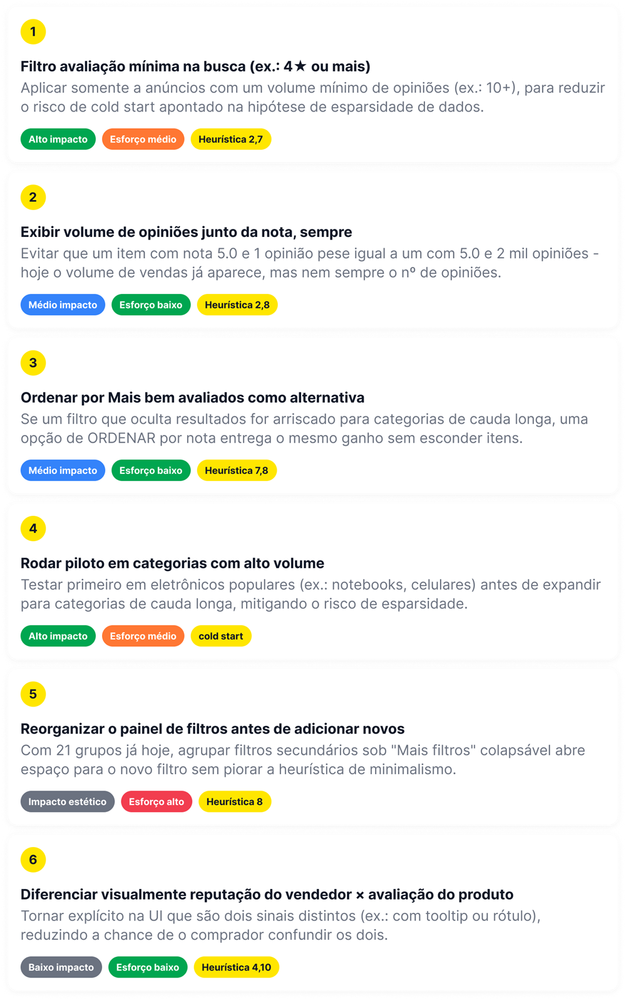
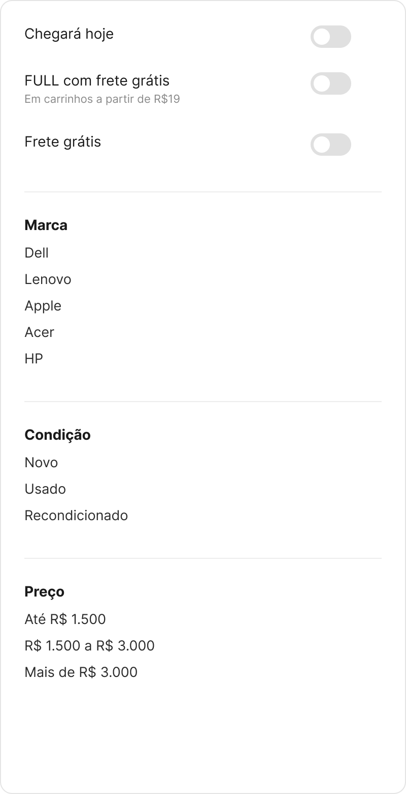
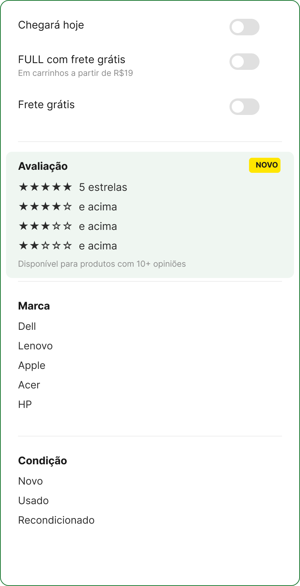

Estudo de caso UX · Heurísticas de Nielsen · 2026
Por que o Mercado Livre não tem um filtro de avaliação por estrelas na busca?
Uma auditoria do fluxo de busca e filtros do Mercado Livre, comparando com a Amazon. Tudo aqui vem de observação direta na interface ou de fontes públicas que dá para conferir.

O problema e a proposta
Problema. Falta do filtro “por avaliação” no resultado de busca. As avaliações de produto (de 1 a 5 estrelas) existem e aparecem nos cards de resultado, só que não servem como critério de busca.
Proposta. Projetar um filtro por avaliação que não atrapalhe o critério de reputação do vendedor, com salvaguarda para produtos com poucas opiniões.

O que o painel de filtros oferece hoje
Navegação real em lista.mercadolivre.com.br/notebook, categoria Notebooks, +9.999 resultados (capturado em jul/2026). Foram 21 grupos de filtro observados, na ordem em que aparecem:
- Chegará hoje
- FULL com frete grátis
- Internacional
- Envio local
- Frete grátis
- Marca
- Linha do processador
- Condição
- Preço
- Pagamento
- Descontos
- Tempo de entrega
- Origem do frete
- Retirada grátis
- Lojas oficiais
- Capacidade de RAM
- Sistema operacional
- Uso
- Capacidade de disco SSD
- Tamanho da tela
- Capacidade total de disco
- ✕ Avaliação (ausente)
A avaliação existe, só não é filtro. No painel de busca da Amazon existe o filtro “Avaliação dos clientes”, com opções como “4 estrelas ou mais”, documentado publicamente pela própria Amazon desde 2013. Não é um achado escondido.


Fatos confirmados
O Mercado Livre não publica explicação oficial para essa ausência, então separo o que consegui confirmar (por observação direta ou fonte pública) do que é só hipótese minha, de raciocínio de UX.
| Fato | Fonte |
|---|---|
| ML permite avaliar produto de 1 a 5 estrelas + comentário. | developers.mercadolivre.com.br · “Opiniões sobre um produto” |
| Média de estrelas aparece nos cards de busca. | Observado em lista.mercadolivre.com.br/notebook, jul/2026 |
| Não existe filtro por nota na busca. | Observado · 21 grupos de filtro mapeados, nenhum é “Avaliação” |
| Amazon tem filtro Avaliação dos clientes desde 2013. | aboutamazon.com · customer reviews and star ratings |
| Catálogo ML agrega notas de vários vendedores. | vendedores.mercadolivre.com.br · concorrência no catálogo |

Hipóteses plausíveis
- Fragmentação catálogo vs anúncios individuais. Nem todo produto está no sistema de Catálogo. Anúncios “iguais” de lojistas diferentes podem existir sem um identificador único (como o ASIN da Amazon), dificultando um filtro de estrelas consistente entre eles.
- Cold start. Muitos anúncios têm poucas vendas e poucas opiniões. Um filtro por estrelas poderia zerar resultados em categorias de cauda longa.
- Herança do modelo de confiança no vendedor. O ML nasceu como marketplace peer-to-peer (como eBay) e investiu no termômetro de reputação do vendedor como sinal central, diferente da Amazon, de herança de varejo, centrada no produto.
- Sobrecarga do painel. Já são 21 grupos de filtro só em “Notebook” (heurística 8, minimalismo). Adicionar mais um filtro de uso incerto compete por espaço e atenção.
- Risco de manipulação de avaliações. Hipótese comum na literatura de marketplaces (não confirmada pelo ML): oficializar um filtro baseado em notas amplificaria o incentivo a reviews fraudulentas ou compradas.
Como o filtro de avaliação ficaria na UI
Um mockup rápido, de baixa fidelidade, usando o mesmo estilo visual do painel de filtros atual do ML. A ideia é mostrar onde e como o filtro entraria, não fechar uma especificação de interface.
- Posição: logo depois dos filtros de entrega/frete e antes de “Marca”, a mesma posição que a Amazon usa.
- Salvaguarda de cold start: o filtro só aparece para produtos com um volume mínimo de opiniões (pensei em 10+), para não esvaziar a busca em categorias menos populares.
- Estilo consistente: reaproveitei a mesma lista de opções já usada em “Marca”, “Condição” e “Preço”, sem inventar um componente novo.



Nada disso deveria ir direto para produção
Esta é a sequência de validação que eu seguiria: primeiro pesquisa qualitativa, depois teste controlado, sempre com critério claro de decisão antes de começar.
- Objetivo
- Entender como as pessoas decidem hoje se “esse produto é bom”, sem um filtro de nota: reputação do vendedor, volume de vendas, fotos de outros clientes.
- Método
- Entrevista moderada de 30 min. Tarefa: “encontre o notebook mais bem avaliado” na busca atual, observando o caminho sem induzir a resposta.
- Aprendizado
- Sinal de que a ausência do filtro é fricção real percebida, ou de que o usuário já resolve isso de outro jeito.
- Objetivo
- Comparar o painel atual com o painel com o filtro de avaliação proposto.
- Método
- Teste A/B moderado com protótipo clicável no Figma. Mesma tarefa: “encontre um notebook com pelo menos 4 estrelas”.
- Métrica
- Tempo até a tarefa, taxa de sucesso, nº de cliques e SUS pós-tarefa, comparando os dois painéis.
- Objetivo
- Medir impacto real, começando pelas categorias com maior volume de opiniões (notebooks, celulares) antes de expandir.
- Método
- Split 50/50 nas categorias piloto. Métricas primárias: taxa de clique no card → ficha do produto, e taxa de conversão.
- Guardrail
- Taxa de reclamação/devolução pós-compra e nº médio de resultados retornados por busca.
- Objetivo
- Definir antes do teste o que conta como sucesso, para não racionalizar o resultado depois.
- Regra
- Se conversão sobe ou se mantém E reclamações não sobem → expandir gradualmente. Se o nº de resultados cair demais em cauda longa → aplicar o filtro só a produtos com 10+ opiniões.
Uma lacuna que é oportunidade
O Mercado Livre já coleta e mostra avaliação de produto, de 1 a 5 estrelas, mas não transforma isso em critério de busca, ao contrário da Amazon. E essa ausência não parece esquecimento: o painel de filtros já é enorme (21 grupos só em Notebooks) e o site aposta pesado em outro sinal de confiança, a reputação do vendedor.
Mesmo assim, acho que a lacuna é uma oportunidade real. Um filtro bem pensado, com salvaguarda contra cold start e contra manipulação de review, poderia dar mais confiança na hora de comprar sem brigar com o sistema de reputação que já existe.
Quer ver a análise completa?
A versão no Notion traz as 10 heurísticas aplicadas uma a uma, o mockup antes/depois e todas as fontes.